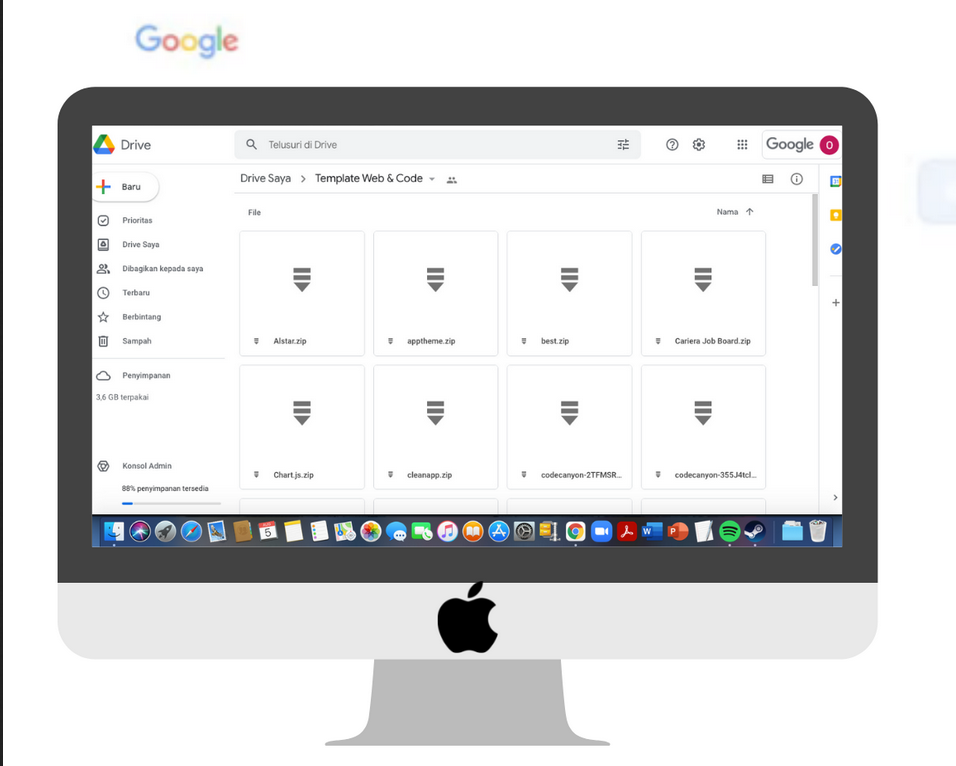

Tentang G-Future Website
G-Future Website, Jasa Pembuatan Website Purwokerto dan Software House Purwokerto,
hadir sebagai perusahaan jasa layanan pembuatan website, aplikasi berbasis website
dan sistem informasi (PHP framework) serta aplikasi android di wilayah Banyumas, Cilacap,
Yogyakarta, Solo, Semarang dan kota lainnya. Selain tiga layanan utama diatas, G-Future Website
juga menyediakan jasa digital marketing untuk memasarkan produk atau brand lewat website dan SEO,
sosial media, email marketing serta google marketing platform. G-Future Website saat ini juga berfokus
mengembangkan berbagai produk dan layanan di bidang Big Data, Internet of Things (IoT) maupun Machine
Learning yang diterapkan di berbagai bidang usaha guna mendukung Strategi Nasional Kecerdasan Artifisial
Indonesia dan Indonesia 4.0
Download
G-future Website menyediakan berbagi file mulai dari template website, web apps, kode program dan tema wordpress
premium yang dapat digunakan oleh programer maupun developer. Kami juga menyediakan ebook, report, jurnal, dokumentasi
webinar dan lainnya di link di bawah ini. Silahkan menggunakannya sebaik mungkin baik untuk membangun sistem informasi,
website, sebagai sumber atau acuan penelitian, bahan ajar atau sekedar bacaan untuk mendapatkan insight menarik seputar
dunia teknologi informasi. File yang tersedia merupakan file GRATIS alias tidak dikenakan biaya sama sekali. File juga
akan diupdate secara berkala, jadi silahkan bisa mengunjungi halaman ini di kemudian hari.

Download Template Web & Kode Program => Download
Download Template WordPress Premium => Download
Ebook (Seputar Dunia Teknologi Informasi: Pemrograman, Database, Data Sains, Digital Marketing dll) => Download
Note: Tersedia menggunakan fasilitas Google Drive
DISCLAIMER:
Semua yang tersedia di link download baik template web dan kode program maupun ebook bersifat gratis/open source dari
berbagai sumber yang tentunya sebagian besar juga tersedia gratis di internet. Dilarang keras menggadakan dan memperjualbelikan
dalam bentuk apapun untuk kepentingan pribadi.